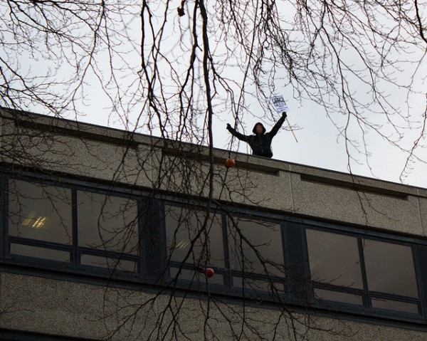
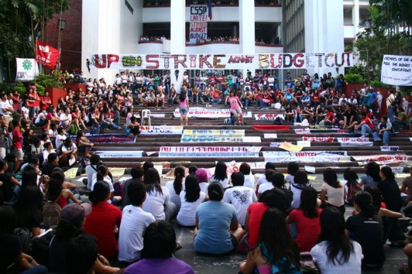
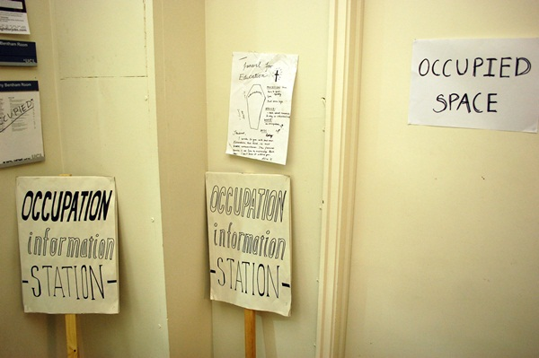
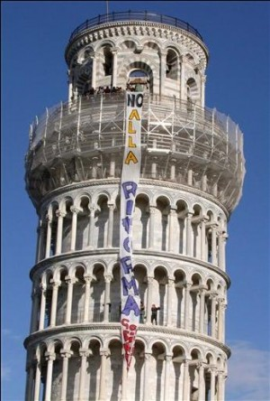
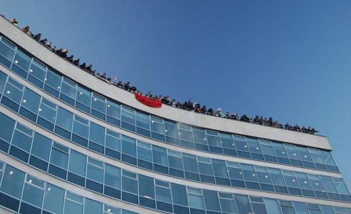

-
On The Beach: Dispatches From Europe
by Idiom December 2, 2010
Over the past several weeks, protests against budget cuts for education and other social services have blossomed all across Europe. What follows is a hasty edit of various texts, statements, reports, and images that have been circulating in connection with these events. The emphasis here is on the most recent protests in the U.K., where dozens of universities have been occupied, including: Cardiff, Cambridge, Edinburgh, Essex, Leeds, London South Bank, Manchester. Newcastle, Oxford, UCL, Sheffield, and Sussex, among others. The following are a mix of primary and secondary sources, and appear unedited, except for considerations of length. Thanks to S.J. Edwards.
From Occupied Oxford – November 30, 2010:
Today a rowdy demo involving hundreds of secondary school kids and sixth formers took over the centre of Oxford.
Here’s a brief run down of events:
# Convergence of different student wakouts happened at 2pm at Carfax. Elation.
# Oxfordshire county council was stormed by a large group of over 100. The rooftop was breached and demands were read aloud. Chaotic scenes. Soon after the police had seized control of the doors the occupiers decided to leave and regroup outside.
# Castle hill was then stormed and briefly occupied.
# The demo then proceeded to Cornmarket where a succession of tax dodging shops were shut down one after the other. Two branches of Vodaphone, a Barclays and a Lloyds tsb. Storming of Lloyds coincided with a dubsteb remix of the music from their advert blasted out on the soundsystem.
# Scuffles with police throughout as people were repeatedly prevented from taking the streets
# The Clarendon Centre and the Westgate shopping centre were rampaged through. Primal vibes.
# Demo finished up in Radcliffe Square. ‘ This is only the beginning’From Defend Cambridge Education – from Awareness, equality, and gender within our movement – Dec 1, 2010
Proposed cuts will have a disproportionate effect on women. For example, the cuts target service industries in which women form the majority of the workforce. In education in particular we have seen nurseries being cut from universities and FE colleges, making it harder for mothers to engage in education. Our politics must link up the fight against cuts with the broader fight against sexism, gender discrimination, and any form of gendered hierarchical divisions of labour.
The anti-cuts movement fights for a particular conception of social justice. We cannot trade off concerns about oppression, in all its manifestations, in the interest of focussing on a single issue. In order to fight effectively we have to be an inclusive movement; sexism, homophobia, racism, class discrimination, and all other forms of oppression limit the potential to build a genuine mass-movement. Together, we are stronger.
We have collectively agreed upon and implemented a safer spaces policy, as a framework for addressing these concerns within our space. The text, developed using the Camp for Climate Action’s policy as a template, can be found here.
From UK Indymedia – University Security Attempt to Evict Student Occupation at Sheffield – November 25, 2010
BREAKING NEWS on the current situation of the student occupation at Sheffield University. Security attempt to forcefully evict protesters, when this fails they set off fire alarms to force legal evacuation of the building.
Since 9pm last night the Sheffield University occupation has been in a state of lock down with university security not allowing any students to enter the building. Following a rally on Sheffield University concourse at 12:00 today a group of twenty to thirty students and university workers decided to join those already occupying the Hicks building lecture theatres. An unguarded entrance to the side of the lecture theatres was used. In response to this influx of new people university security decided to initiate a forceful eviction of the lecture theatres.
Despite the security staff’s aggression occupiers were able to resist attempts to remove them through mass, passive resistance. When their attempt at eviction had clearly failed security staff decided to deliberately set off the fire alarms in the building, disrupting many students in the middle of lectures and seminars and forcing a legal eviction on the grounds of “health and safety”. In response the occupiers have moved to Firth Court and have taken the space outside of the Vice Chancellors office inside of this building.
Support is desperately needed for the students ongoing actions. Publicise the occupation and the actions of the security staff and please come to Firth Court and show your support for the occupiers.
Richard Yates, Sheffield University Security Services Manager, will also undoubtedly be happy to hear your opinion of what his security team have been doing.
From Art Against Cuts – December 1, 2010
Tomorrow, Thursday 2nd, the freshly formed Free Education group at Camberwell will be handing out free curry to cold students, and distributing leaflets and chatting to people about the Fees, Cuts etc. If you want to come and help out, please do! We will hopefully be there around 12.30 onwards. There will then be a meeting at 5pm for anyone who is interested to come (although we would call on all) and join in with our organisation of future action. Again this meeting will be open to all students, from any college.
A group of us will also visit the Slade tonight for the meeting at 7pm.
More details to follow!
- From UCL Occupation – November 25, 2010
hello and good luck to you. After a decade of banality could the radical be on the rise? Robin Ince (Twitter)
From Left Foot Forward - November 30, 2010
Whilst Americans have come to expect Fox’s style of news reporting, Friday’s edition of Fox News’s “Special Report” was particularly concerning. That was because this time they were talking about Britain.
In a segment described as ‘Yankee Rebellion Resonates in Ye Olde England’, Fox reported that Great Britain is following the lead of the United States in embracing the ‘Tea Party’ ideology.
Within the report at around the 23-second mark, the Fox voiceover explains that:
“…a new rebellion against big Government and high taxes is resonating in Ye Olde England…”
There followed a series of soundbites from Matthew Sinclair, representing the TaxPayers’ Alliance. Whilst arguing the point that in fact the British people are increasingly for smaller government and cuts they use footage of a protest march to illustrate their point.
It is only used for a matter of seconds, however if one examines the video the protesters are in fact marching against education cuts and increased tuition fees which arguably are a direct contrast to what Fox reported.
The video handed the misrepresentation legitimacy, meaning the 99 per cent of viewers who would not have noticed what the banners and placards of the protesters actually said would have believed they were Tea Party activists.
As well as addressing UKIP and the EDL – the latter described as a ‘nationalistic group upset about immigration’ – Fox issues a glowing report on the comparisons between the TaxPayers’ Alliance and its American counterparts.
From Really Open University, Excerpt from Letter from Federico Venturini, Leeds, December 1, 2010
Monday evening, after the vote on the last proposal (regarding the occupation of the Ziff and with respect to future actions), I decided to abandon my involvement in the occupation of Michael Sadler building. The reasons are manifold.
A few considerations…
The last meeting was told that “the occupation is a serious matter”: I totally agree, if smiling, if laughing, if feeling, if making love, if having fun, are part of being “serious”.
It has been said that this occupation is not a party. Firstly, this consideration is without any logical need. Secondly, what are the parties, concerts, debates, social dinners which have been organized in and by this occupation for? Simple moments to attract new activists? A “contentino” for the insistent militants, a payoff a concession to stop them whining? I am not a flyer-soldier!
An occupation is an experiment, an exploration of the social relations that should be in a future world. Unfortunately in this occupation and during our meetings, was used the same power dynamics that exist in this corrupted society; only they are masked by a “supposed” democracy. Where the proposals and the votes are the core. The control of the majority over the minority.
[...]
I’m Federico: free thinker, free individual. If the meeting exceeds the limits of my being, I must abandon it.
[...]
The assembly and votes are not the only way to make decisions in a proper form. In a demonstration do we fake a vote to resist the police? Or to make a block? A making decisions is not only raising a hand.
I think that the occupation of the Ziff was absolutely positive, an action that showed how the student movement is not rigid and that raises the fight. I think that we have to thank the occupation of Ziff because it proved that we are not locked in a building and we are determined to redouble our actions. I see no logical connection between the occupation of the Ziff and the risk of eviction of Michael Sadler, perhaps we are worried about being evicted by fellow students?
The police evict, they decide, they are the enemies who do not care!
We speak so much about keeping unity and about solidarity, let us show it: we must accept the actions of other groups so we move forward!
Unconditional solidarity to Ziff building occupants!
They were neither leaders nor led!
Neither god nor state.
Neither servants nor masters.
From a letter describing actions taken on the morning of December 2, 2010
‘T. just rang me from the slade and wanted to pass the news on. The UCL security have been trying to take back the building and it looks like UCL want to get injunctions out on SLADE and the UCL occupations. They have been blockading the entrance with a life drawing class !! (beautiful act of creative resistance !!.. give life drawing its life back !) and are talking to staff about finding ways through the legal loop holes so that the Long Weekend can take place, but its looking less certain that last night. We might have to have a plan B for the Long weekend …. Tonight’s meeting is still going ahead for 7pm ..
Excerpt from Communique from an Absent Future – Research and Destroy – 2009 via libcom
7 AGAINST POMPEII
WE LIVE AS A DEAD CIVILIZATION. We can no longer imagine the good life except as a series of spectacles preselected for our bemusement: a shimmering menu of illusions. Both the full-filled life and our own imaginations have been systematically replaced by a set of images more lavish and inhumane than anything we ourselves would conceive, and equally beyond reach. No one believes in such outcomes anymore.
The truth of life after the university is mean and petty competition for resources with our friends and strangers: the hustle for a lower-management position that will last (with luck) for a couple years rifted with anxiety, fear, and increasing exploitation—until the firm crumbles and we mutter about “plan B.” But this is an exact description of university life today; that mean and petty life has already arrived.
Just to survive, we are compelled to adopt various attitudes toward this fissure between bankrupt promises and the actuality on offer. Some take a naïve romantic stance toward education for its own sake, telling themselves they expect nothing further. Some proceed with iron cynicism and scorn, racing through the ludicrous charade toward the last wad of cash in the airless vault of the future. And some remain committed to the antique faith that their ascendingly hard labor will surely be rewarded some day if they just act as one who believes, just show up, take on more degrees and more debt, work harder.
Time, the actual material of our being, disappears: the hours of our daily life. The future is seized from us in advance, given over to the servicing of debt and to beggaring our neighbors. Maybe we will earn the rent on our boredom, more likely not. There will be no 77 virgins, not even a plasma monitor on which to watch the death throes of the United States as a global power. Capitalism has finally become a true religion,wherein the riches of heaven are everywhere promised and nowhere delivered. The only difference is that every manner of crassness and cruelty is actively encouraged in the unending meantime. We live as a dead civilization, the last residents of Pompeii.
Romantic naïvete, iron cynicism, scorn, commitment. The university and the life it reproduces have depended on these things. They have counted on our human capacities to endure, and to prop up that world’s catastrophic failure for just a few more years. But why not hasten its collapse? The university has rotted itself from the inside: the “human capital” of staff, teachers, and students would now no more defend it than they would defend a city of the dead.
Romantic naïvete, iron cynicism, scorn, commitment: these need not be abandoned. The university forced us to learn them as tools; they will return as weapons. The university that makes us mute and dull instruments of its own reproduction must be destroyed so that we can produce our own lives. Romantic naïvete about possibilities; iron cynicism about methods; scorn for the university’s humiliating lies about its situation and its good intentions; commitment to absolute transformation — not of the university, but of our own lives. This is the beginning of imagination’s return. We must begin to move again, release ourselves from frozen history, from the igneous frieze of this buried life.
We must live our own time, our own possibilities. These are the only true justifications for the university’s existence, though it has never fulfilled them. On its side: bureaucracy, inertia, incompetence. On our side: everything else.
[...]
The Greek uprising of December 2008 broke through many … limitations and marked the beginning of a new cycle of class struggle. Initiated by students in response to the murder of an Athens youth by police, the uprising consisted of weeks of rioting, looting, and occupations of universities, union offices, and television stations. Entire financial and shopping districts burned, and what the movement lacked in numbers it made up in its geographical breadth, spreading from city to city to encompass the whole of Greece. As in France it was an uprising of youth, for whom the economic crisis represented a total negation of the future. Students, precarious workers, and immigrants were the protagonists, and they were able to achieve a level of unity that far surpassed the fragile solidarities of the anti-CPE movement.
Just as significantly, they made almost no demands. While of course some demonstrators sought to reform the police system or to critique specific government policies, in general they asked for nothing at all from the government, the university, the workplaces, or the police. Not because they considered this a better strategy, but because they wanted nothing that any of these institutions could offer. Here content aligned with form; whereas the optimistic slogans that appeared everywhere in French demonstrations jarred with the images of burning cars and broken glass, in Greece the rioting was the obvious means to begin to enact the destruction of an entire political and economic system.
Ultimately the dynamics that created the uprising also established its limit. It was made possible by the existence of a sizeable radical infrastructure in urban areas, in particular the Exarchia neighborhood in Athens. The squats, bars, cafes, and social centers, frequented by students and immigrant youth, created the milieu out of which the uprising emerged. However, this milieu was alien to most middle-aged wage workers, who did not see the struggle as their own. Though many expressed solidarity with the rioting youth, they perceived it as a movement of entrants – that is, of that portion of the proletariat that sought entrance to the labor market but was not formally employed in full-time jobs. The uprising, strong in the schools and the immigrant suburbs, did not spread to the workplaces.
[...]
As an alternative to being herded by representatives, we call on students and workers to organize themselves across trade lines. We urge undergraduates, teaching assistants, lecturers, faculty, service workers, and staff to begin meeting together to discuss their situation. The more we begin talking to one another and finding our common interests, the more difficult it becomes for the administration to pit us against each other in a hopeless competition for dwindling resources. The recent struggles at NYU and the New School suffered from the absence of these deep bonds, and if there is a lesson to be learned from them it is that we must build dense networks of solidarity based upon the recognition of a shared enemy. These networks not only make us resistant to recuperation and neutralization, but also allow us to establish new kinds of collective bonds. These bonds are the real basis of our struggle.
We’ll see you at the barricades.

2 Comments
Architectures of Silence: The Turner at The Tate
[...] the entrance hall of Tate Britain to capitalize on the media turnout. This was the latest in a series of continued protests against the coalition government’s proposed cuts to arts and education. Divided from the [...]
What London’s Student Protests Mean For the Future of Art | Private Galleries Tour
[...] across the U.K. and Europe are being hit by cuts, and students, faculty, and cultural workers are reacting in various ways. I highlight Goldsmiths because, for art watchers, the school is a brand and a symbol. For those [...]